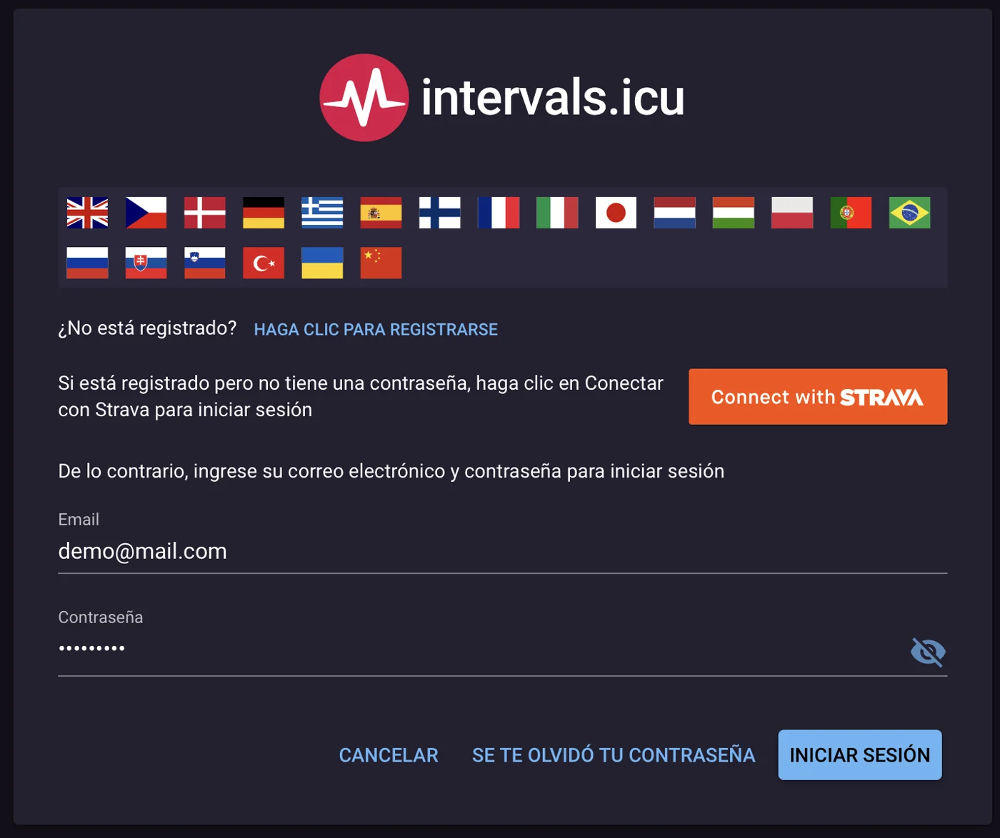
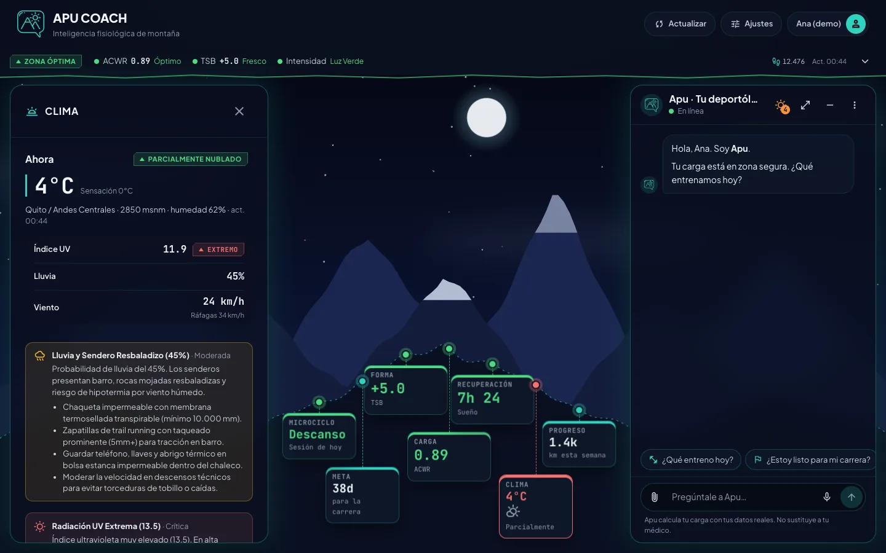
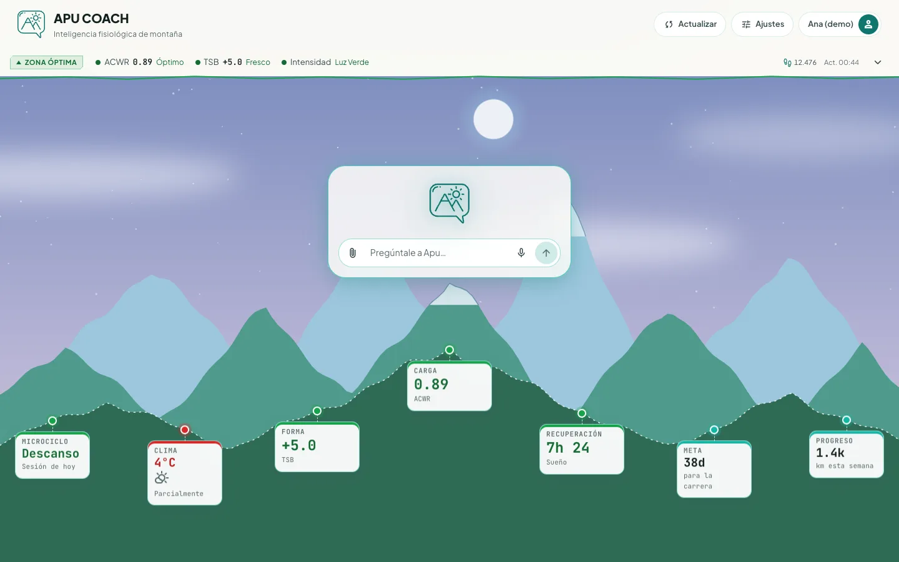
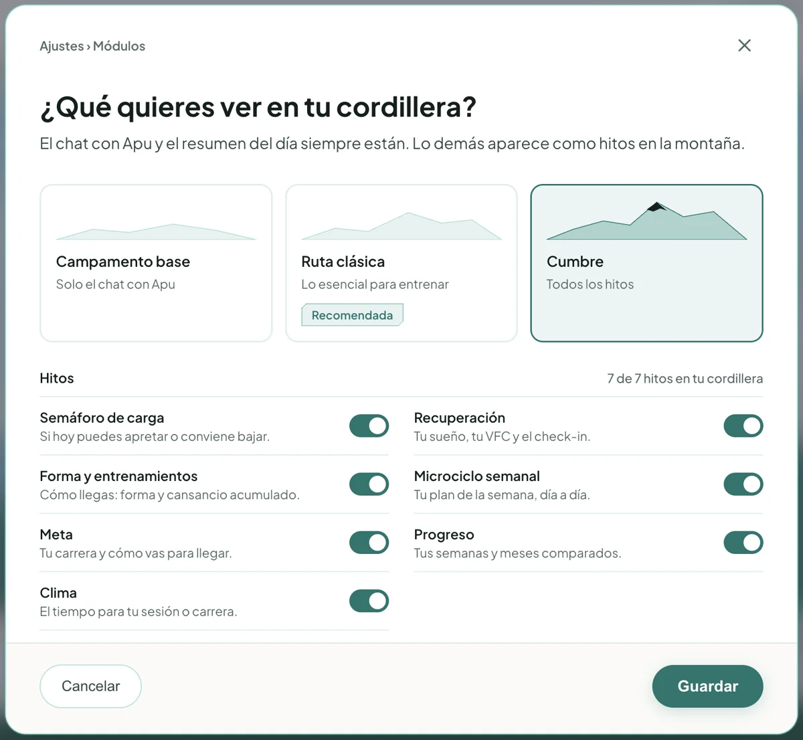
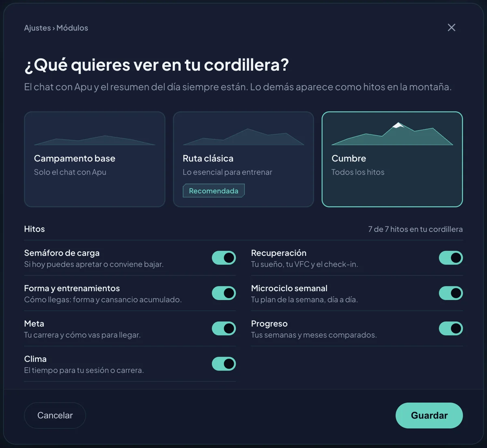
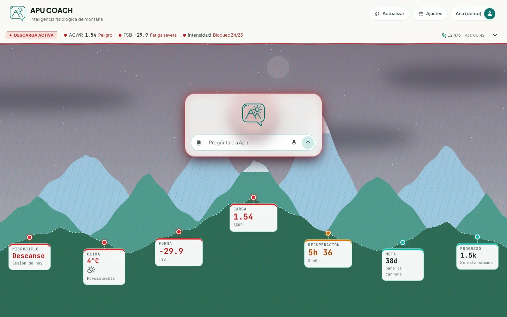
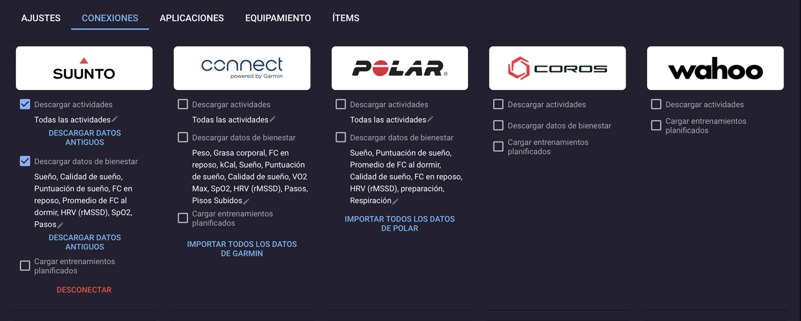
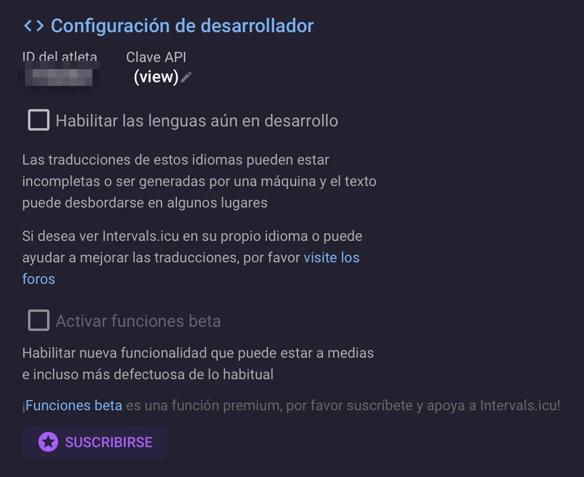
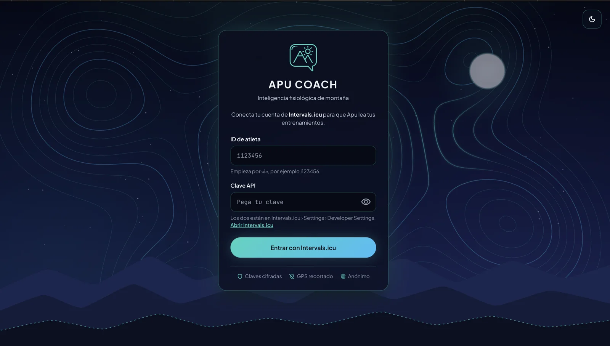
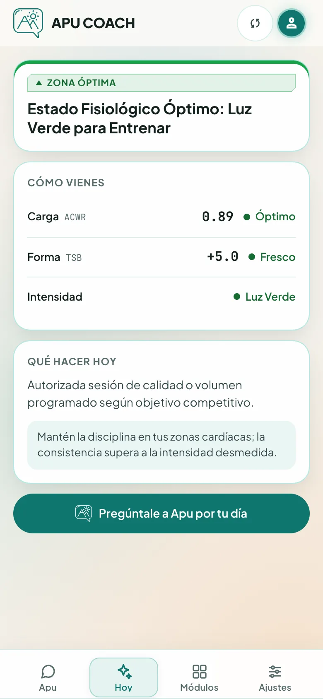

Crea tu cuenta gratis en Intervals.icu
- Abre intervals.icu. Si la ves en inglés, toca la bandera de España.
- Pulsa Haga clic para registrarse y crea tu cuenta con correo y contraseña.
- Confirma el correo que te llega e inicia sesión.

Apu Coach
Lee tu reloj. Calcula con ciencia. Te dice qué entrenar hoy.
Ana (atleta de demostración) le pregunta qué entrenar mañana. Grabación real de la app.
El chat
Nada de consejos genéricos. Apu cruza tu carga, sueño, VFC, zonas y clima antes de contestar.

La cordillera

Lo que vienes entrenando frente a lo que tu cuerpo aguanta (ACWR).
Si llegas fresco o con fatiga acumulada (TSB).
Sueño, VFC y tu check-in de cada mañana.
Tu sesión de hoy dentro del plan de la semana.
Días a tu carrera, ritmo por tramos y tapering.
Pronóstico de montaña a 16 días.
Tus semanas y meses comparados.
A tu medida
Elige cuántos hitos quieres ver. Solo el chat, lo esencial o la cumbre completa.


Escudo anti-lesiones
Desliza para ver el mismo día con y sin sobrecarga.

Zona óptima · ACWR 0.89 Sobrecarga · ACWR 1.54«Hoy no se puede. Con un ACWR de 1.54 y el sueño en 5.6 horas, la fatiga aguda te está pasando factura. Descarga activa: 20–30 min de trote muy suave en Zona 1.»
Extracto de la respuesta real de Apu a «¿Puedo hacer series hoy?»En cualquier pantalla
Web · Amanecer andino
Cómo funciona
Conectar
Apu lee tus datos a través de Intervals.icu, una plataforma gratuita que reúne los relojes deportivos más usados.

AjustesConexiones

AjustesConfiguración de desarrollador
i123456.


Esto es lo primero que verás: tu estado, cómo vienes y qué hacer hoy.
¿Algo no funcionó?
Revisa que el ID empiece por «i» y que no copiaste espacios al inicio o al final. Si generaste una clave nueva, la anterior ya no sirve: pega la más reciente.
En Intervals.icu, entra a Ajustes › Conexiones y revisa que en la tarjeta de tu reloj esté marcado «Descargar datos de bienestar». Tu reloj también debe registrar sueño y VFC (no todos los modelos lo hacen).
Sincroniza el reloj con la app de su marca (Garmin Connect, Coros, Suunto…) y espera unos minutos a que lleguen a Intervals.icu. Luego pulsa Actualizar en Apu. Si solo usas Strava, conecta además tu reloj directamente.
La cuenta básica es gratuita y tiene todo lo que Apu necesita. Intervals.icu acepta aportes voluntarios para sostener la plataforma.
Solo los lee para calcular tu estado. Tus claves se guardan cifradas, cada atleta está aislado y las rutas GPS se recortan 500 m al inicio y al final para proteger tu casa.
Hecho en Quito · 2.850 m
El espíritu tutelar que habita las cumbres. En la cosmovisión andina, la montaña que protege y que exige preparación, humildad y respeto a quien la sube.
El entrenador que lee tus datos, decide con criterio y te acompaña en cada ascenso. Juntos, Apu Coach: la montaña que te cuida y el coach que te prepara para subirla.
Por qué existe
Tu reloj te da números. Entrenar bien exige saber qué hacer hoy sin lesionarte.
Para quién
10K, media y maratón. Constancia sin romperse y tapering exacto para llegar fresco.
Ritmo ajustado a pendiente (GAP), estrategia sobre tu GPX y análisis del .FIT de la carrera.
Altura, aclimatación y clima de cumbre a 16 días. Ante señales de alarma, prioriza bajar.
Seguridad
La IA explica; el código calcula y decide. Cada respuesta se verifica antes de llegarte.
Planes
Durante el piloto, todos los atletas tienen acceso completo.
Dónde estamos
Motor en Python (FastAPI) con analítica determinista, base de datos PostgreSQL en Supabase y Gemini como modelo de lenguaje con respaldo automático en Groq.
Buscamos corredores, clubes de Quito, médicos deportivos e inversionistas.
Luis Alfredo
lpilco7@gmail.com · WhatsApp 0979 323 343
Comunidad
¿Encontraste un error? ¿Se te ocurre algo mejor? Cada comentario llega directo al equipo.
Vista previa: el muro aún no está conectado a Google Sheets, así que lo que publiques solo se guarda en este navegador.